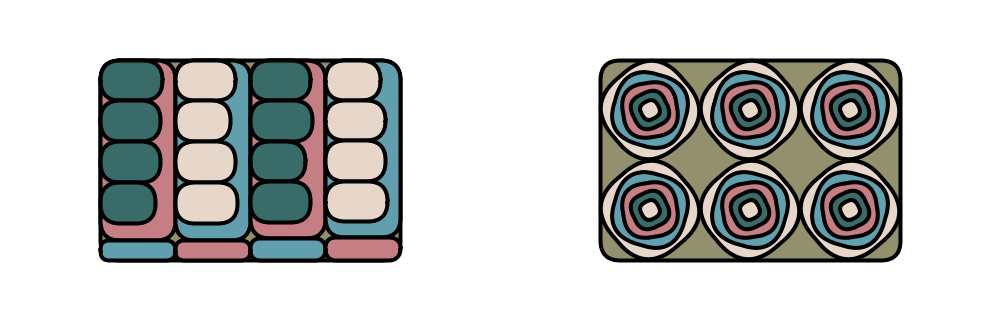
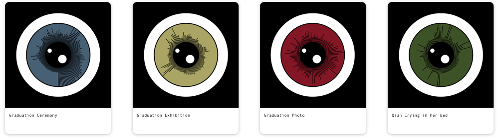

7 in 7
Memories of hangzhou
Hangzhou, a city in southern China, is renowned as “Paradise on Earth”, “Cultural State”, “Home of Silk”, “Tea Capital”, “Town of Fish and Rice”. This project is about Hangzhou and me. I spent my four undergraduate years there, I met my best friends, harvested love, became optimistic and so on, so there is a huge emotional connection between Hangzhou and me. In this project, each day I am going to express one kind of connection with Hangzhou. All those connections are expanded by time order.
Day one: 2006-2013
Day two: Sep.2013
Day three: Sep.2013 - Sep.2014
Day four: Sep.2013-Jun.2017
Day five: Sep.2013-Jun.2017
Day six: Jun.2017
Day seven: Jun.2017-now
1. Day One: Summon
At the age of ten, I went to Hangzhou for the first time. I cannot remember too much about this trip. I could only remember the beautiful sunset of West Lake, the endless Rain and frog in Hangzhou, and large areas of tea plantation. Actually, after this trip, there always had a voice telling me that I have to go back to this place. The name of my first-day project is Summon. It talks about the fuzzy memory I had of Hangzhou many years after my first visit and before I went again, and the magic voice that always appealing to go back.
This project is made by Processing, and here is the Gif form. The triangle here represents the sparkling lake, the pattering rain, the tea leaves floating in the wind, and my vague memories.

2. Day Two: The New World
In September 2013, I came to hangzhou for the second time to attend college. At that time, I was in a completely new environment, going to explore unknown, happy, excited, nervous, distracted and confused, surrounded by schoolmates wearing the same T-shirts and having the same feelings as me.
This project is made by Processing, and here is the Gif form. Red ring is the Red Spider Lily, and it represent the new environment. This wildflower grew in every corner of the school, very spectacular. Purple rectangles are the new students, they wore the same T-shirt, trying to know each other and trying to fit in. Blue cubes represent the school, Zhejiang University. At the beginning of the school year, we did lots of orientation, talking about ZJU, trying to be a molecular of ZJU. All the elements are spinning, which means that I was happy, excited, nervous to explore the new college life.

3. Day Three: Butterfly
During my freshman year, I almost went to study rooms every night. When the study rooms was to close, the campus radio would broadcast the Butterfly Lovers. Today my topic is about this concerto. I make a music visualization version of it.
This project is made by Processing, and here is the screen recording video form. I simulate the butterfly waving wings with the music.
4. Day Four: Tension & Relaxation
This project talks about the life in Hangzhou. There are two contradictory kinds of life here. On the one hand, the life rhythm is very fast, which drives China’s Internet industry. On the other hand, Hangzhou is very a comfortable city suitable for leisure and vacation.
This project depicts the two kind of life. Tension and relaxation. This project is made by Processing, here the gif. The first part is about Tension. The original imagery is Alibaba Mansion, this project depicts the scene of people busy working in this building to create a kind of tension. The second half is Relaxation. The original imagery is a little boutique that I loved to go named Nanyang. It is a album store as well as a Southeast Asian food restaurant. I could spent a whole afternoon with my friends tasting curry and picking some classic album record. This image depicts the curry food and album to create a kind of relaxing feeling.

5. Day Five: HZer
This project talks about the people in Hangzhou. For the people first time to Hangzhou, they will be suprised that the vehicles there are very polite — they always yield to the pedestrians, no matter what the traffic light. This project depicts the polict, modest and dynamic people in Hangzhou.
This project is made by Processing. Here is the Gif.

6. Day Six: Last Sight
This project is about my graduation. During my graduation, I recorded a lot of videos to memorize those treasured moments. However, some of them are very private, so I want to change those video into a symbolic way of presentation, and to make it unique and memorable.
I use the imagery of eye, representing the meaning of witness and see. The sounds inside the videos decide the patterns of the pupils. It like a kind of QR code, each video has its own pattern.
This project is made by Processing. Although this video was just random shots, it is significant to me, so I try to generate patterns to make it sharable.
Here are the transformed pattern of some graduation videos.

7. Day Seven: Snowy Beats
The first winter I left Hangzhou, it snowed. The snow scene in Hangzhou is gorgeous, but I can only see it on social media. The theme of the last project is to express my thoughts about this place, so I want to pass the medium of ice and snow.
This project is made by Processing. Here is the video. Many people think that Hangzhou is a gentle, slow-paced city. This is a stereotype, so I want to use a radical way to break the mindset. Hangzhou can also be very rocky and very enthusiastic.
The circle is when you look up to see the snow falling. It’s dazzling. Square represents it is freezing from the center of the ice. The twinkling rhombus is when a bunch of car lights is shining on the falling snow at night.